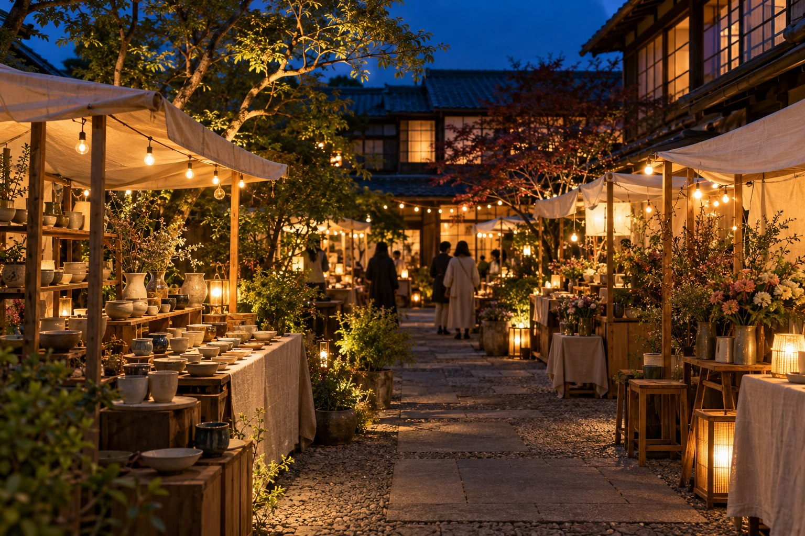
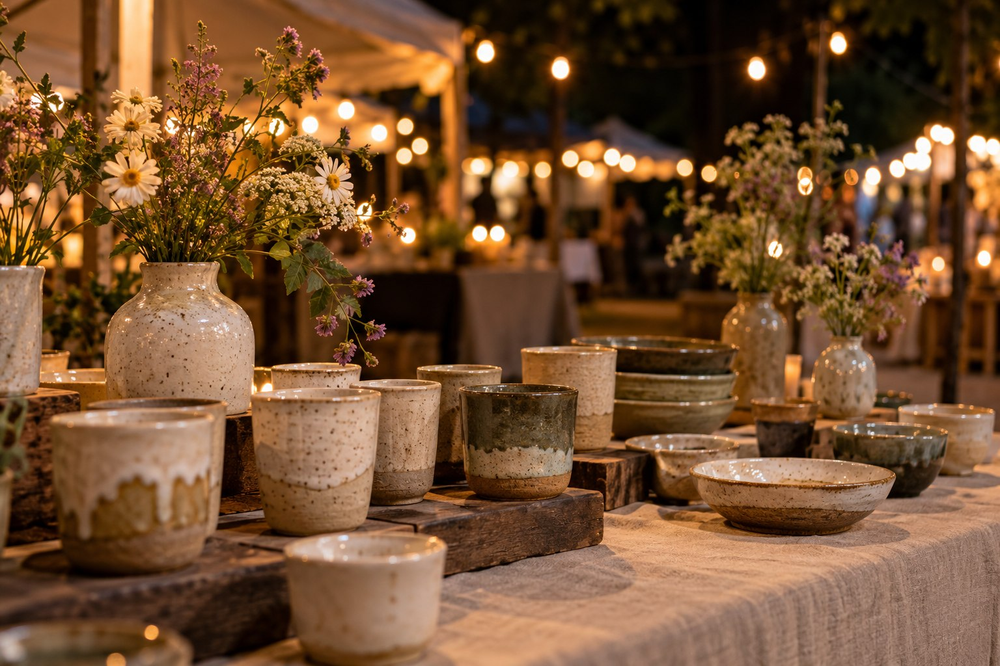

FOOD / CRAFT / MUSIC
夜の余白市
灯りの下で、
好きに出会う。
11.072026 / SAT
16:00—21:00
月灯り広場［架空会場］

LOOK AROUND.
HELLO, EVENING.
いつもの一日と、
夜のあいだに。
予定を詰めこまない、土曜日の夕方。
香ばしい匂いのほうへ。
気になる手ざわりのほうへ。
ふと聴こえてきた音楽のほうへ。
「夜の余白市」は、食・工芸・音楽が集まる
小さな夕方マーケット。
ひと回りして、寄り道して、もうひと回り。
好きなものを見つける余白を、どうぞ。
THREE LITTLE DETOURS
夜をめぐる、
三つの寄り道。
01
おいしい、を探す。
焼きたてをひとつ。
湯気のある飲み物をひとつ。

02
手ざわり、に出会う。
毎日に連れて帰りたい、
器と布と、作り手の話。
03
音楽、に立ち止まる。
急がずに、耳を澄ませる。
広場に流れる、小さなライブ。
マーケットがはじまる
暮れゆく空と、最初の音楽
灯りと楽しむ夜のセッション
また、次の余白で